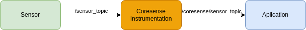
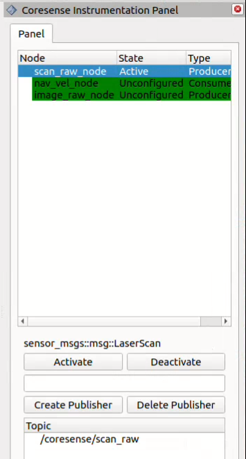
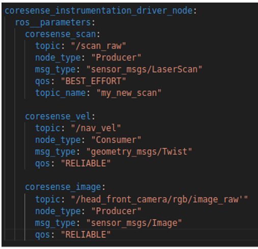

CoreSense Instrumentation
Note
This package is part of the CoreSense project. Feedback is welcome in the issue tracker.
Monitoring robot behavior in real-world applications often requires tracking multiple nodes, each with its own topics. To simplify this, we developed CoreSense Instrumentation. It allows you to monitor the state of the robot’s systems and manage nodes and topics, including creating or deleting them as needed.


Figure 1 Virtual driver creation
The tool works by creating a virtual driver for each component, as shown in Figure 1. Each driver uses a lifecycle topic, letting you configure, activate, and deactivate components easily. You can also set up new data flows, enabling inspection and diagnostics of your robot’s status. For easy visualization, we provide an Rviz plugin, seen in Figure 2.


Figure 2 CoreSense Instrumentation RViz plugin
How to use
Installation
To install CoreSense Instrumentation, follow these steps:
mkdir ~/instrumentation/src -p
cd ~/instrumentation/src
git clone https://github.com/CoreSenseEU/coresense_instrumentation.git
cd ..
rosdep install -y -r -q --from-paths src --ignore-src
colcon build --symlink-install
Deployment
Coresense instrumentation can be defined within a launch file to facilitate seamless interaction between various nodes. When configuring a virtual driver, the following parameters can be specified:
Name (optional): The name of the new topic to be created by the virtual driver.
Source Topics: The names of the topics from which data will be taken.
Message Type: The type of the ROS message (msg) that will be transmitted or received.
Node Type: Indicates whether the node will act as a producer (publisher) or a consumer (subscriber) of the data.

Figure 3 Configuration file for virtual driver creation
In this example, the instrumentation node is set to publish data to the new topic my_new_scan, using data sourced from /scan_raw, with the message type sensor_msgs/LaserScan.
Implementation
InstrumentationConsumer
Member Functions
get_topic: Returns the name of the current topic.
get_topic_type: Returns the type of the topic.
on_configure: Configures the node during the transition to the active state.
on_activate: Activates the node and makes it start its publishing/subscribing.
on_deactivate: Deactivates the node and stops it from interacting with topics.
on_cleanup: Cleans up the node resources.
on_shutdown: Handles shutdown-related procedures.
Services
handleCreateSubscriberRequest: Handles the creation of new subscribers.
handleDeleteSubscriberRequest: Handles the deletion of existing subscribers.
Private Members
pub_: Publisher for the topic.
status_pub_: Publisher for the node status information.
status_timer_: Timer used to publish the node status periodically.
create_subscriber_service_: Service to handle the creation of subscribers.
delete_subscriber_service_: Service to handle the deletion of subscribers.
subscriptions_: A map that stores active subscriptions based on topic names.
topic_: The name of the topic.
topic_type_: The type of the topic message.
type_: Specifies whether the node is a producer or consumer.
InstrumentationProducer
Member Functions
get_topic: Returns the topic name.
get_topic_type: Returns the type of the topic message.
on_configure: Called when the node enters the configure state.
on_activate: Called when the node becomes active.
on_deactivate: Called when the node is deactivated.
on_cleanup: Called when cleaning up node resources.
on_shutdown: Called when the node is shutting down.
Services
handleCreatePublisherRequest: Handles requests to create new publishers.
handleDeletePublisherRequest: Handles requests to delete existing publishers.
Private Members
sub_: Subscription to the topic.
status_pub_: Publishes node status.
status_timer_: Timer used to publish node status periodically.
create_publisher_service_: Service for handling publisher creation.
delete_publisher_service_: Service for handling publisher deletion.
publishers_: Map of topic names to their respective publishers.
topic_: Topic name.
topic_type_: Message type for the topic.
type_: Type of node (producer).